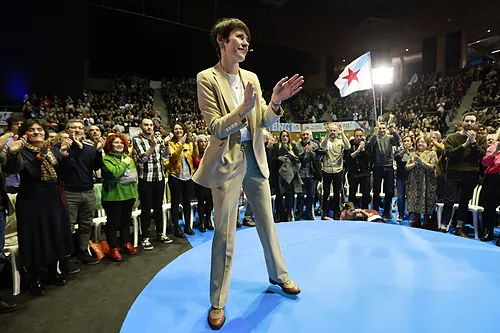

| Noticias | Deportes | Elecciones en Galicia | Internacional | España |
|---|
6/2/2024

6/2/2024
| Noticias | Deportes | Elecciones en Galicia | Internacional | España |
|---|
| Justicia.Los tres peones que quisieron salvar a Puigdemont en el Supremo y la jefa que decidirá. La teniente fiscal del Alto Tribunal escogida por Delgado tendrá la última palabra sobre la calificación de terrorismo en la causa de Tsunami Democràtic | Protestas.La virulencia de la revuelta del campo desborda al Gobierno: " Si coméis es gracias a nosotros" | Lecrim.Yolanda Díaz ya se desmarca del plan del Gobierno para convencer a Puigdemont. No saben si la oferta para acotar las investigaciones judiciales será suficiente y admiten que la decisión de los fiscales lo complica todo |
 |
 |
El azote de Ter Stegen. | Verstappen, Hamilton y el 'affaire' Horner ponen la 'salsa' al evento de Red Bull | Benítez:"Tenemos muchas ganas de hacerlo bien y sumar los tres puntos |
| Por si acaso, no pierdan de vista el boto exterior | Tiempo de reflexionar: la política gallega afronta su batalla más reñida en 15 años. | La música anima la campaña, ¿y la cuenta de los artistas? |
| Estados Unidos. multa de 329 millones a Trump, que perderá el control de sus empresas durante 3 años. El ex presidente estadounidense califica de "ilegal y antiamericana" su condena por fraude continuado | Rusia. Putin acaba con Navalny en su ofensiva contra el mundo libre. | Oriente próximo. Dos israelís mueren en un atentado palestino en el sur de israel. El ministro de Defensa, Yoav Gallant, afirma a un grupo de medios extranjeros que la guerra impuesta por Hamas "tiene un componente existencial" para Israel |
|  | Política. Democracia Ourensana, la gran pregunta sobre el 19-F con un lema de película: "Enseñame la pasta". El alcalde de Orense no cierra ninguna puerta y apoyará "hasta al más malo" si garantiza inversiones para la provincia | Elecciones. "Pontonizar" Galicia: Un BNG crecido se lanza hacia las mujeres y roba al PSOE el "voto del cambio". | Sucesos. Detienen en Zaragoza a un monitor y entrenador de fútbol de 18 años como presunto corrupto de menores. La Policía localizó en su móvil 212 fotografías y 52 vídeos con numerosos niños en situaciones íntimas y en conductas de carácter sexual o pornográfico |